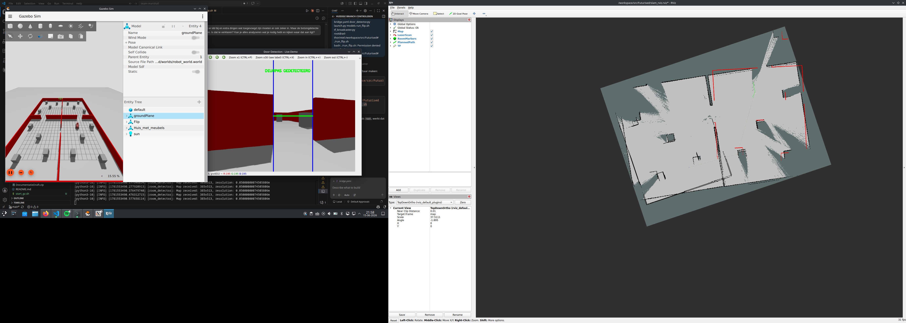

Introductie
Welkom op de overdrachtswebsite van ons groepsproject. De afgelopen maanden hebben wij samengewerkt in opdracht van Futurised. Het resultaat van deze samenwerking is te vinden op dit platform: van onze individuele processen en software-architectuur tot het uiteindelijke eindproduct. Via het burgermenu rechtsboven navigeert u eenvoudig door de verschillende pagina's en documentatie. Hieronder staat een kort overzicht van de paginas waar welke informatie te vinden is, veel leesplezier!
Installatie: Hier staat de installatie en configuratie van ROS 2 Jazzy en Gazebo Harmonic.
Processen: Hier staat alle documentatie, uitleg en werkprocess van alle code en software-architectuur. Deze onderdelen zijn opgedeeld per persoon.
Aanbevelingen: Hier staan eventuele aanbevelingen voor als ons project overgedragen wordt.
Over ons
Wij zijn een gedreven team van vijf technische informatica studenten en de afgelopen maanden hebben wij onze verschillende vaardigheden gebruikt om voor Futurised een sterk product neer te zetten. Binnen ons team heeft iedereen zijn eigen specialisme, van Techlead tot Scrummaster, maar we zijn allemaal betrokken bij het schrijven van software. Hierdoor vulden wij elkaar perfect aan tijdens de sprints, hebben we uitdagingen snel kunnen tackelen en een compleet eindproduct kunnen leveren.
Voor een tabel over de volledige taakverdeling zie 'processen.'
Projectdoel: Een Autonome Blusrobot Simuleren
Het hoofddoel van dit project is het simuleren van een betrouwbaar, veilig en volledig autonoom navigatiesysteem voor onze brandweerrobot, genaamd Flip. Tijdens een brand telt elke seconde en is er zoveel mogelijk mankracht nodig voor het redden van levens. Apparatuur die in deze situaties wordt ingezet, moet blindelings kunnen functioneren zonder constant menselijke aansturing te vereisen.
Flip is een blusrobot die al ingezet wordt bij de brandweer, maar wij hebben dit in Gazebo (simulatieomgeving) gezet om Flip uit te bereiden en testen te kunnen uitvoeren. Wij hebben de volgende functies toegevoegd aan Flip:
Zelfstandig navigeren: De snelste en meest efficiente route berekenen van punt A naar punt B met behulp van een pathfinding-algorimte.
Omgeving analyseren: Functies die wereld-coördinaten (meters) vertalen naar raster-coördinaten (pixels/cellen) en vice versa, zodat de robot begrijpt waar hij staat.
Voorspelbaar en veilig reageren: De logica die controleert welke cellen bereikbaar zijn en welke aangrenzende cellen (buren) de robot kan bezoeken.
Eindproduct
Mappenstructuur:
De volgende mappenstructuur wordt gebruikt in de omgeving.
Futurised/
├── models/ # Bevat de 3D-SDF modellen van de robot en objecten
├── worlds/ # De virtuele Gazebo-werelden (brandscenario's)
├── bridge.yaml # Configuratiefile voor de ROS 2 <> Gazebo bridge
├── camera.py # Verwerkt de camerabeelden van Flip
├── door_detector.py # Detecteert deuropeningen en checkt de breedte (NF11)
├── explorer.py # De core logica: bevat het A*-pathfinding algoritme
├── launch.py # Start alle nodes en de simulatie in één keer op
├── mapper.py # Verwerkt de LiDAR-data tot een bruikbare kaart (SLAM)
├── room_detector.py # Identificeert afzonderlijke kamers in het gebouw
└── run_flip.sh # Het hoofdscript waarmee je de hele robot opstartFeatures:
Er zijn heel wat features bij gekomen voor Flip. Dit zit allemaal in een virtuele omgeving en dus niet op 'real-life' Flip.
| Functionaliteit | Wat doet het? | Status |
|---|---|---|
| Autonoom Rondrijden | De robot kan zelfstandig stuursignalen verwerken en vloeiend door de simulatie bewegen. | Werkend |
| Omgeving Scannen (LiDAR) | Met een 360-graden sensor kijkt de robot continu om zich heen om de wereld te begrijpen. | Werkend |
| Botsing Detectie & Ontwijken | Flip herkent muren en objecten direct en stopt of stuurt bij om botsingen te voorkomen. | Werkend |
| Slimme Routebepaling (Pathfinding) | De robot berekent zelf de allersnelste en meest efficiënte route van A naar B. | Werkend |
| Deur & Doorgang Herkenning | De software scant of openingen wel breed genoeg zijn zodat de robot niet klem komt te zitten. | Werkend |
| Kamer Detectie | De robot herkent overgangen in de structuur en deelt het pand logisch op in aparte kamers. | Werkend |
| Live Mapping (SLAM) | Terwijl de robot rondrijdt, bouwt hij live een nauwkeurige digitale platplattegrond op van de brandhaard. | Werkend |
| Camera-interactie | De ingebouwde camera checkt nog extra voor deur herkenning om meer zekerheid te bieden voor de LiDAR. | Werkend |

Figuur 1: De brandweerrobot Flip in de Gazebo simulatie omgeving. Bekijk filpmje eindproduct